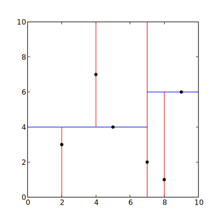
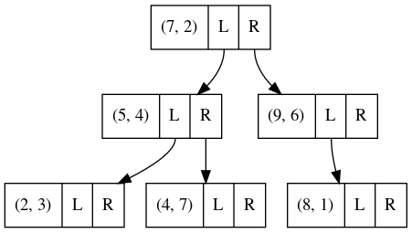
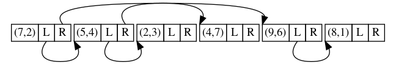

Red Riding Hood & the forest of k-d trees
Jørgen Kvalsvik
May 13, 2021
What is in this talk
My k-d tree journey
Why the odd title?
- Fairy tales are told and re-told
- Vehicle for teaching & learning
- Familiar form makes room for play
- Transcend time and place
Disclaimers
Some code has been modified to fit on slides
Spoiler alert
Little Red Riding Hood


The collapse of the Taiping Rebellion and my subsequent wanderings to avoid the deadly clutches of vengeful imperial agents form the basis of this narrative, a narrative whose very existence and use of the first person pretty much ruin any sense of suspense that might have made it worth reading.
Drew Herman, Port Angeles, WA
https://www.bulwer-lytton.com/2021
木
Given a set of points P with a value (x, y, v) and a radius R
what is the averge value of the points within R of p for every p in P.

Average value in the circle?
for q in points:
if distance(p, q) <= radius:
close.append(q)
return mean(close)for p in points:
close = []
for q in points:
if distance(p, q) <= radius:
close.append(q)
yield mean(close)Performance? Complexity?
O(n²)

k-d tree
The k-d tree is a binary tree in which every node is a k-dimensional point.
Every non-leaf node can be thought of as implicitly generating a splitting hyperplane that divides the space into two parts, known as half-spaces.
Points to the left of this hyperplane are represented by the left subtree of that node and points to the right of the hyperplane are represented by the right subtree.
The hyperplane direction is chosen in the following way: every node in the tree is associated with one of the k dimensions, with the hyperplane perpendicular to that dimension’s axis.
Source: wikipedia.org/wiki/kd_tree
A monad is a monoid in the category of endofunctors, what’s the problem?
Features
- Nearest neighbour search
- Range searches
- Database search by multiple keys
- Example: salary & age
Inventing the k-d tree
template < typename Point >
struct kdtree {
kdtree() = default;
template < typename PointItr >
kdtree(PointItr, PointItr, int depth = 0);
Point p;
std::unique_ptr< kdtree > left;
std::unique_ptr< kdtree > right;
};template < typename Point, typename Radius >
bool inrange(const Point& p, const Point& q, Radius r) noexcept {
const auto x0 = q[0] - p[0];
const auto x1 = q[1] - p[1];
return x0*x0 + x1*x1 <= r*r;
}Construction algorithm
function kdtree ([Point] points, int depth) {
// Select axis based on depth
var int axis := depth mod k;
select median by axis from pointList;
// Create node and construct subtree
node.location := median;
node.left := kdtree(points < median, depth+1);
node.right := kdtree(points > median, depth+1);
return node;
}kdtree::kdtree(PointItr fst, PointItr lst, int depth) {
const auto axis = depth % 2;
auto less = [axis](const auto& l, const auto& r) noexcept {
return l[axis] < r[axis];
};
std::sort(fst, lst, less);
const auto midpoint = std::distance(fst, lst) / 2;
const auto mid = std::next(fst, midpoint);
const auto mid1 = std::next(mid);
this->p = *mid;
if (fst != mid)
this->left = std::make_unique(fst, mid, depth + 1);
if (mid1 != lst)
this->right = std::make_unique(mid1, lst, depth + 1);
}Nearest neighbour search
NNS(q: point, n: node, p: ref point, w: ref distance):
if leaf(n):
w' := ||q - n.point||
if w' < w then w := w'; p := n.point
else:
if q(n.axis) <= n.value:
search_first := left
else:
search_first := right
if search_first == left:
if q(n.axis) - w <= n.value then NSS(q, n.left, p, w)
if q(n.axis) + w > n.value then NSS(q, n.right, p, w)
else:
if q(n.axis) + w > n.value then NSS(q, n.right, p, w)
if q(n.axis) - w <= n.value then NSS(q, n.left, p, w)Ref [1]
Nodes in radius search
NRS(q: point, n: node, p: ref point, r: radius):
w' := ||q - n.point||
if w' < r then yield n
if not leaf(n):
if q(n.axis) <= n.value:
search_first := left
else:
search_first := right
if search_first == left:
if q(n.axis) - w <= n.value then NRS(q, n.left, p, w)
if q(n.axis) + w > n.value then NRS(q, n.right, p, w)
else:
if q(n.axis) + w > n.value then NRS(q, n.right, p, w)
if q(n.axis) - w <= n.value then NRS(q, n.left, p, w)Two decisions:
- Include the node or not
- Walk a subtree or not





Takeaways:
- Check subtree if search radius crosses dividing line
- Only need to check towards the dividing line
Easier question: when do you not walk the subtree?
Neighbours-in-range
OutItr query(P& p, double r, InItr node, int depth, OutItr out) {
const auto& q = *node->p;
const auto left = node.left.get();
const auto right = node.right.get();
const auto axis = depth % 2;
if (inrange(p, q, r))
*out++ = q;
if (p[axis] - r <= q[axis] && left)
out = query(p, r, left, depth + 1, out);
if (p[axis] + r >= q[axis] && right)
out = query(p, r, right, depth + 1, out);
return out;
}Baby steps

Effective abstractions
class kdtree::view {
public:
explicit view(const kdtree* node) : n(node) {}
const Point& operator * () const noexcept (true) {
return this->n->p;
}
view left() const noexcept (true) {
return view(this->n->left.get());
}
view right() const noexcept (true) {
return view(this->n->right.get());
}
operator bool () const noexcept (true) {
return bool(this->n);
}
private:
const kdtree* n;
};
Pointer in a top hat

OutItr query(P& p, double r, InItr node, int depth, OutItr out) {
const auto& q = *node;
const auto left = node.left();
const auto right = node.right();
const auto axis = depth % 2;
if (inrange(p, q, r))
*out++ = q;
if (p[axis] - r <= q[axis] && left)
out = query(p, r, left, depth + 1, out);
if (p[axis] + r >= q[axis] && right)
out = query(p, r, right, depth + 1, out);
return out;
}Missed opportunity?
OutItr query(const P& p, double r, InItr node, OutItr out) {
const auto& q = *node;
const auto left = node.left();
const auto right = node.right();
const auto axis = node.depth() % 2;
if (inrange(p, q, r))
*out++ = q;
if (p[axis] - r <= q[axis] && left)
out = query(p, r, left, out);
if (p[axis] + r >= q[axis] && right)
out = query(p, r, right, out);
return out;
}Easier to use
- Impossible to forget incrementing depth
- Similar to the familiar iterators
- No get()
Models tree properties
- Left/right subtree
- Captures depth
- Captures leaf
This is a very effective abstraction; query() is not really touched again for the rest of the talk
Representation
template < typename Point >
struct kdtree {
kdtree() = default;
template < typename PointItr >
kdtree(PointItr, PointItr, int depth = 0);
Point p;
std::unique_ptr< kdtree > left;
std::unique_ptr< kdtree > right;
};- Pointer-based trees support fast splicing
- but splicing likely invalidates invariant
- splicing gives lifetime issues
- Tree merges not very common
- full rebuilds faster without pointer chasing
- Bad usability, bad performance
- Nodes treated as independent, not part of collection
Store collection of nodes
template < typename Point >
class kdtree {
Point p;
kdtree* left = nullptr;
kdtree* right = nullptr;
std::unique_ptr< kdtree[] > storage;
};Improvements enable new improvements
template < typename Point >
class kdtree {
struct node {
Point p;
node* left = nullptr;
node* right = nullptr;
};
std::unique_ptr< node[] > storage;
};In all the fairy tales, things come in threes
We want the tree to be:
- Default constructible
- Copy constructible
- Move constructible
- ✓ Default constructible
- ✗ Copy constructible
- ✓ Move constructible
The rule of three
If a class requires a user-defined destructor, a user-defined copy constructor, or a user-defined copy assignment operator, it almost certainly requires all three.
kdtree(const kdtree& o) {
const auto n = count_nodes(o);
this->storage.reset(new kdtree[n]);
std::copy_n(o.storage.get(), n, this->storage.get());
}oops



kdtree(const kdtree& o) {
const auto n = count_nodes(o);
this->storage.reset(new kdtree[n]);
std::copy_n(o.storage.get(), n, this->storage.get());
auto* src0 = o.storage.get();
auto* dst0 = this->storage.get();
for (int i = 0; i < n; ++i) {
auto& dst = this->storage[i];
const auto& src = o.storage[i];
dst.p = src->p;
if (src.left) dst.left = dst0 + distance(src0, src.left);
if (src.right) dst.right = dst0 + distance(src0, src.right);
}
}What about move?
… it almost certainly requires all three.
The rule of zero
Classes that have custom destructors, copy/move constructors or copy/move assignment operators should deal exclusively with ownership
Remember this from the 90s
template < Point >
class kdtree : public binarytree< Point >class kdtree {
struct node {
Point p;
node* left = nullptr;
node* right = nullptr;
};
tree_storage< node > storage;
};template < typename Node >
struct tree_storage {
public:
tree_storage() = default;
tree_storage(std::size_t n) : storage(n) {}
tree_storage(const tree_storage& o);
const Node* get() const noexcept;
Node* get() noexcept;
private:
std::vector< Node > storage;
};On pointers

The essence of a pointer
- Absolute address
- Arithmetic support
- Carries type information
- Can be marked “unset” (nullptr)
What do we really use?

storage = [(7,2) (5,4) (2,3) (4,7) (9,6) (8,1)]
left = [ 1 2 -1 -1 5 -1 ]
right = [ 4 3 -1 -1 -1 -1 ]class kdtree {
private:
std::vector< int > left;
std::vector< int > right;
std::vector< Point > storage;
};- Relocatable
- Cheap to copy
- Easy to serialize
view left() const noexcept (true) {
// follow edges by looking up left[pos]
// and maintain pos as the tree is descended
const auto k = this->tree->left[this->pos];
return view(this->tree, k, this->d + 1);
}template < typename Point >
class kdtree {
public:
template < typename PointItr >
kdtree(PointItr, PointItr);
kdtree() = default;
kdtree(const kdtree&) = default;
kdtree(kdtree&&) = default;
private:
std::vector< int > left;
std::vector< int > right;
std::vector< Point > storage;
};- ✓ Default constructible
- ✓ Copy constructible
- ✓ Move constructible
storage = [(7,2) (5,4) (2,3) (4,7) (9,6) (8,1)]
left = [ 1 2 0 0 5 0 ]
right = [ 4 3 0 0 0 0 ]kdtree::kdtree(PointItr fst, PointItr lst) :
left (std::distance(fst, lst), 0),
right (std::distance(fst, lst), 0),
storage(std::distance(fst, lst))
{
this->init(fst, lst, 0, 0);
}
kdtree::view::operator bool () const noexcept (true) {
return bool(this->pos);
}Gazing into the abyss
Abstraction does not stop at the class boundary
// old
const auto axis = depth % 2;
const auto less = [axis](const auto& l, const auto& r) noexcept {
return l[axis] < r[axis];
};
std::sort(fst, lst, less);
const auto midpoint = std::distance(fst, lst) / 2;
const auto mid = std::next(fst, midpoint);
// new
const auto pivot = this->select_pivot(fst, lst, depth);
const auto mid = this->partition_inplace(fst, lst, pivot);const auto pivot = this->select_pivot(fst, lst, depth);
const auto mid = this->partition_inplace(fst, lst, pivot, depth);
this->storage[pos] = *mid;
auto out = pos + 1;
if (fst != mid) {
this->left[pos] = out;
out = this->init(fst, mid, depth + 1, out);
}
const auto mid1 = std::next(mid);
if (mid1 != lst) {
this->right[pos] = out;
out = this->init(mid1, lst, depth + 1, out);
}
return out;Easier to play with alternatives
PointItr select_pivot(PointItr fst, PointItr lst, int depth)
noexcept {
struct less {
int axis;
constexpr explicit less(int a) : axis(a) {}
constexpr bool operator () (const P& lhs, const P& rhs)
const noexcept {
return lhs[axis] < rhs[axis];
}
};
using indices = std::make_index_sequence< 2 >;
constexpr static auto cmps = init_less< less >(indices {});
std::sort(fst, lst, cmps[depth % 2]);
return std::next(fst, std::distance(fst, lst) / 2);
}template < typename Less, std::size_t... I >
constexpr auto init_less(std::index_sequence< I... >) {
return std::array { Less(I)... };
}template < std::size_t Axis, typename Itr >
Itr kdtree::select_pivot(Itr fst, Itr lst) noexcept {
auto less = [](const auto& lhs, const auto& rhs) noexcept {
return lhs[Axis] < rhs[Axis];
};
std::sort(fst, lst, less);
return std::next(fst, std::distance(fst, lst) / 2);
}Bonus
(left-balanced implicit edges)
Thank you
As Granny sewed the bloody wolf pelt onto the stained red cape, Little Red downed another shot, reminding herself that even alcohol has a better taste than the gastric acid of a wolf.
References
[1] http://andrewd.ces.clemson.edu/courses/cpsc805/references/nearest_search.pdf